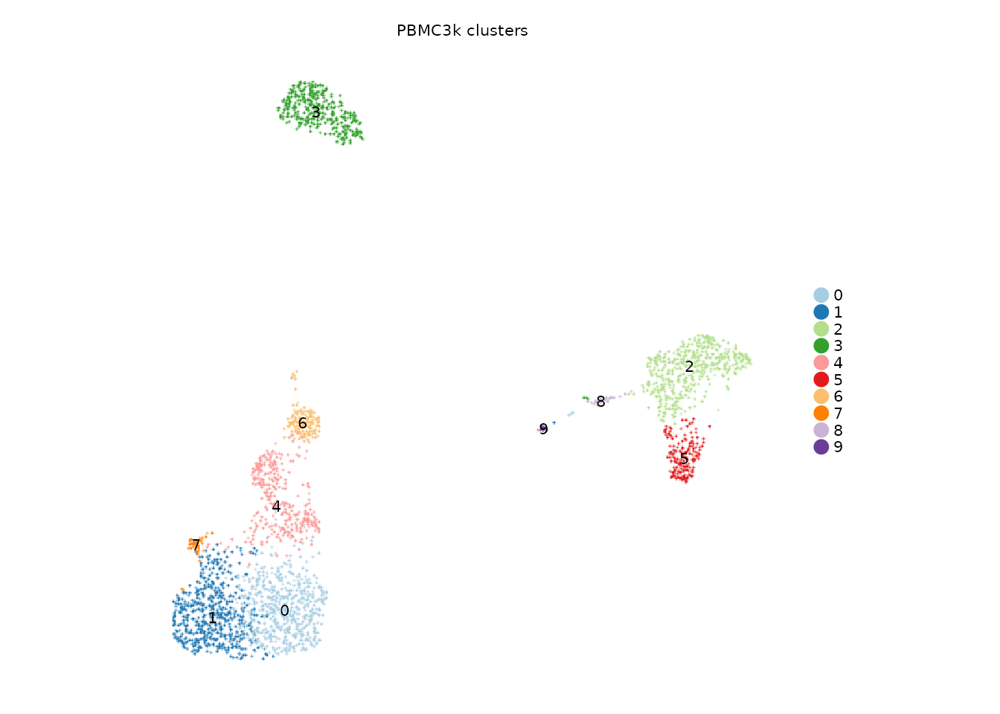
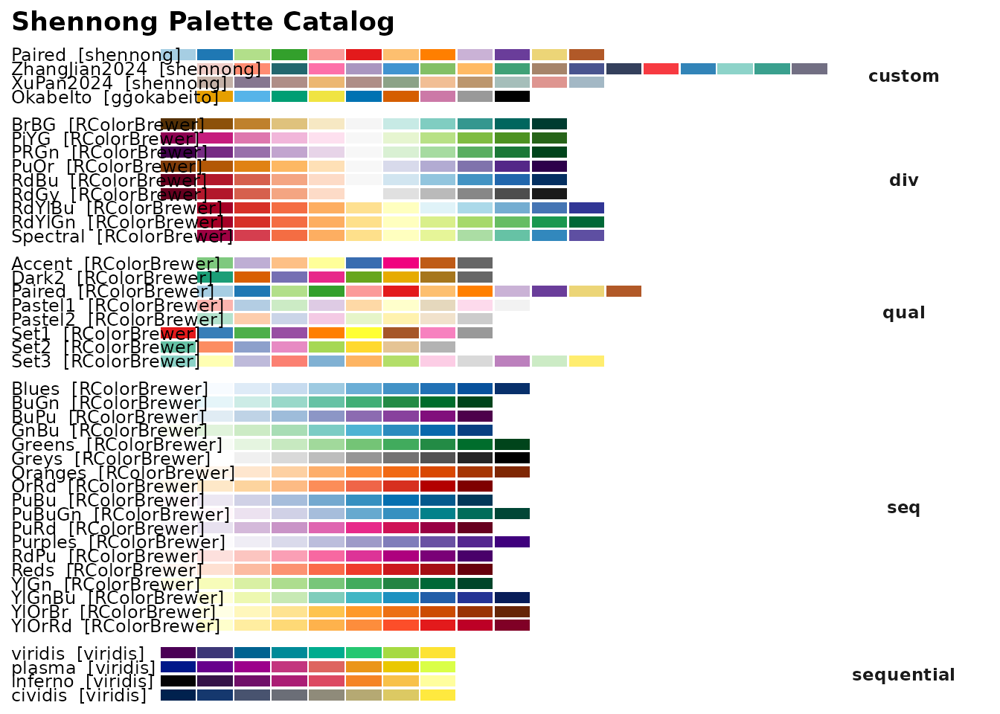
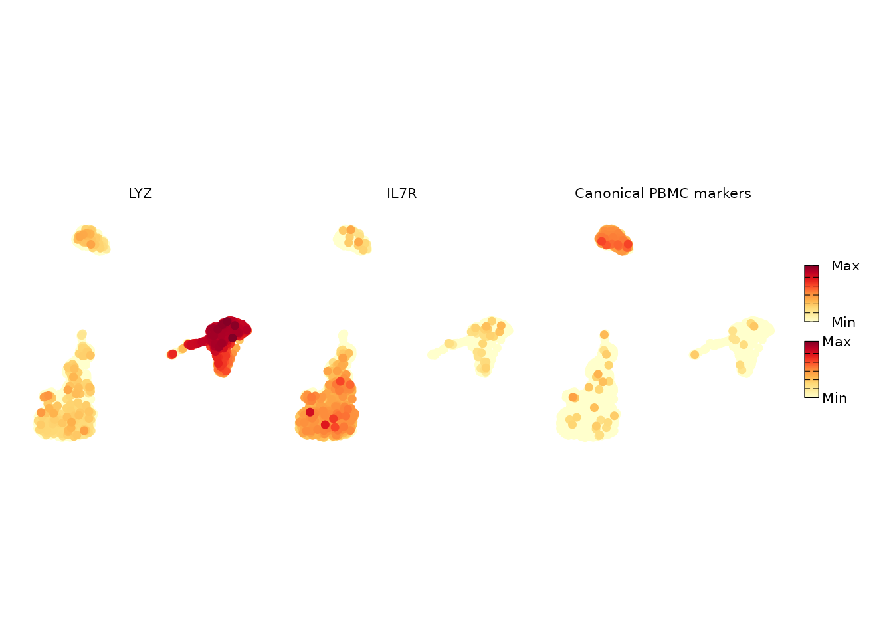
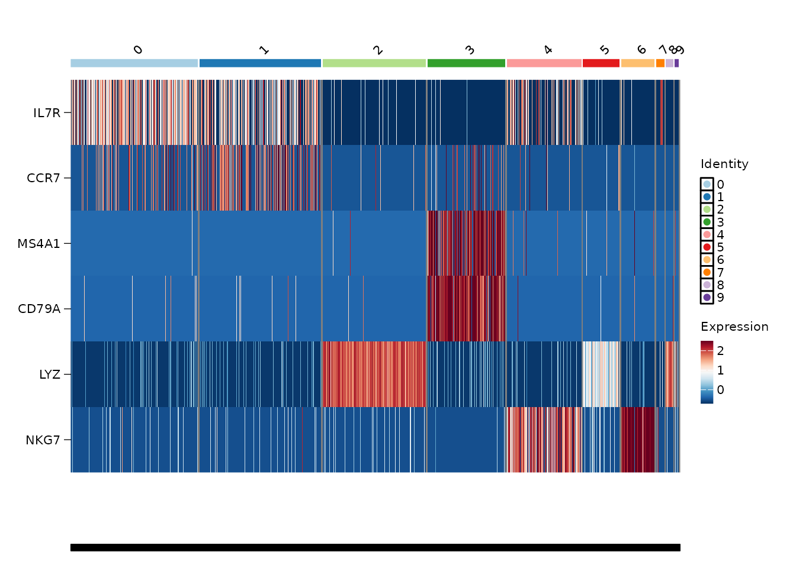
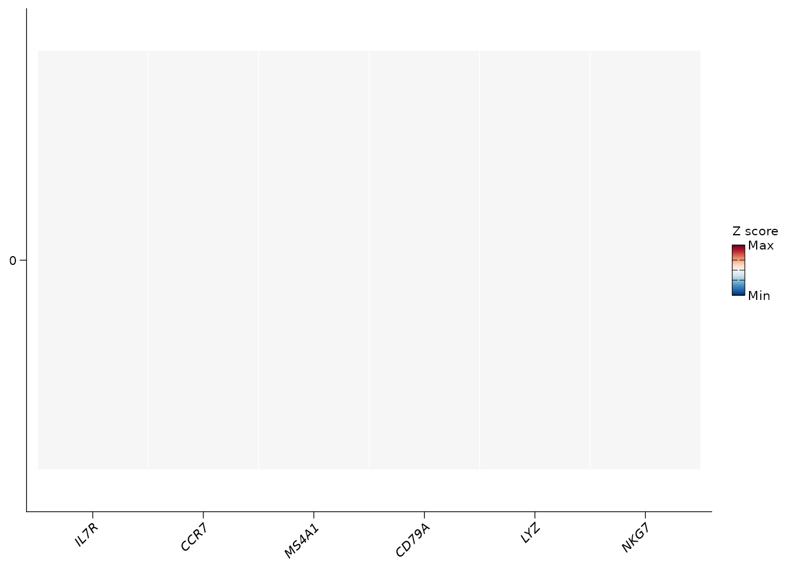
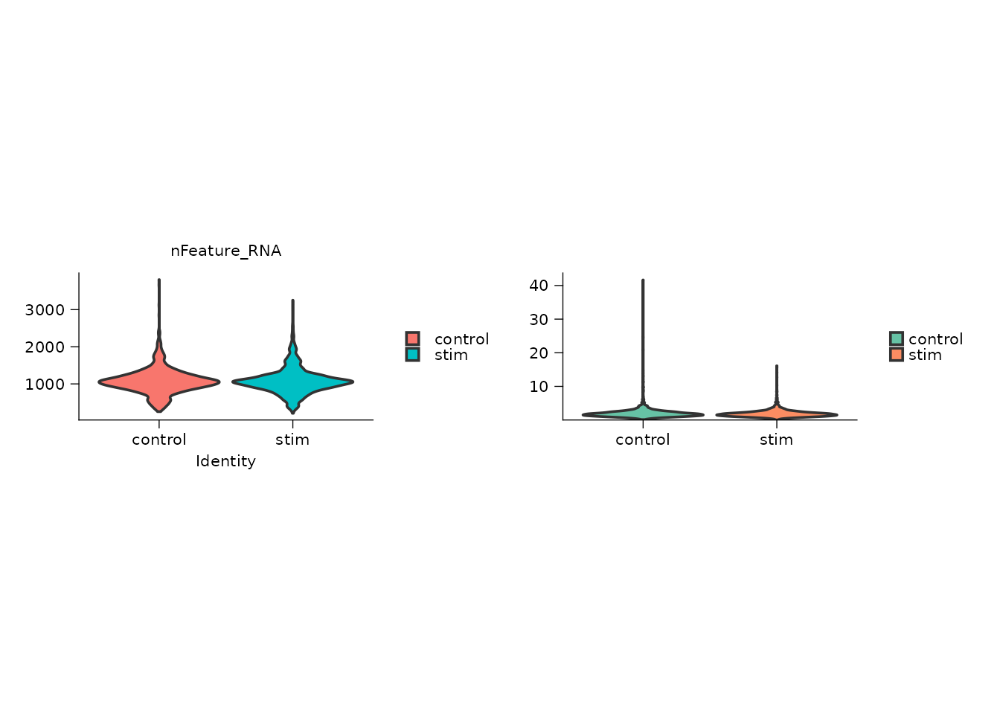
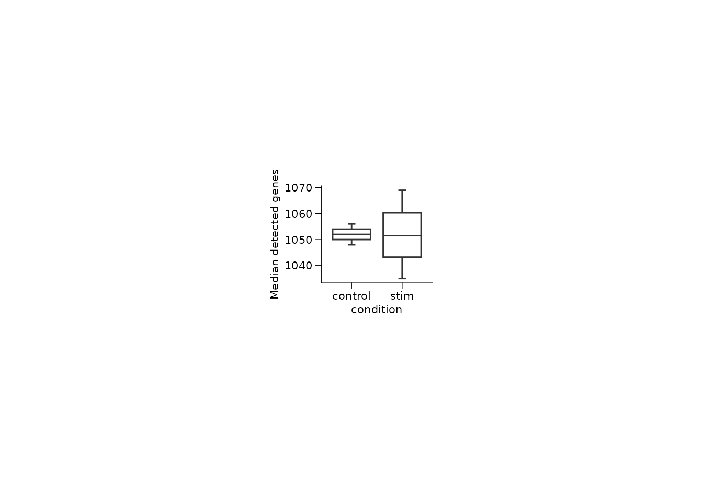
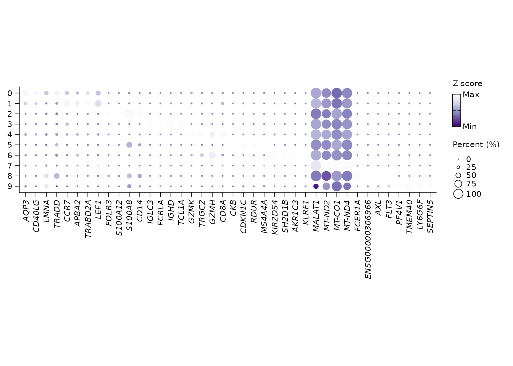
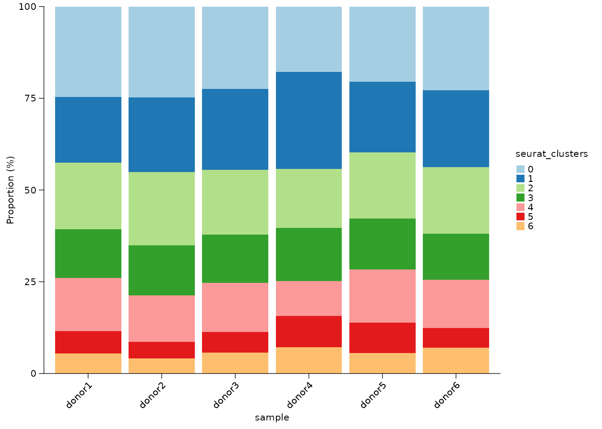
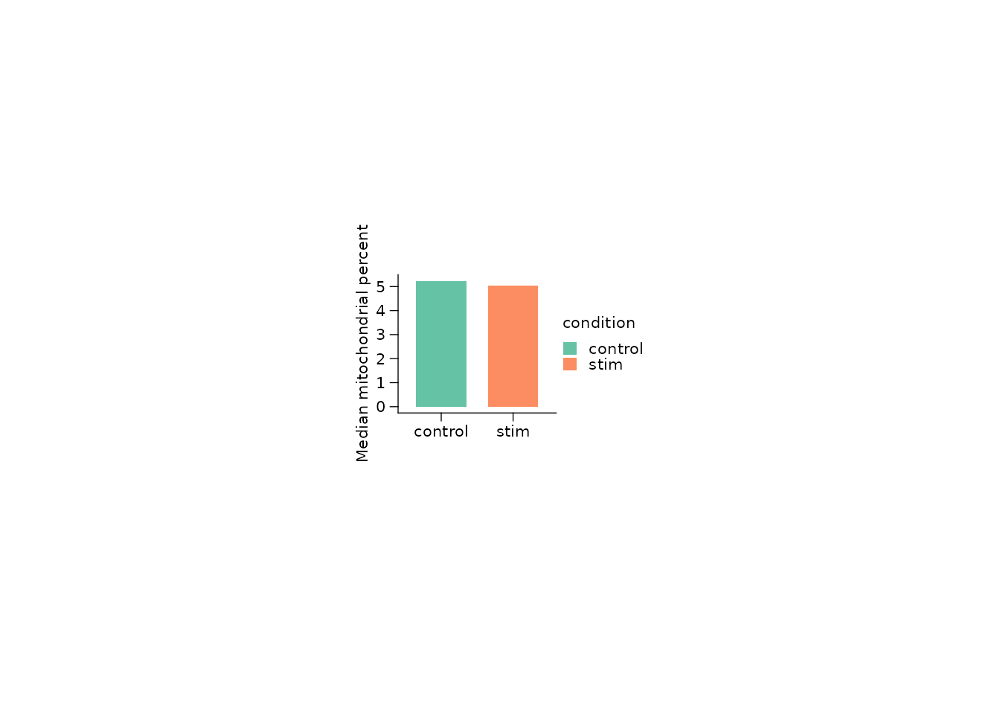

Visualization with Shennong
Songqi Duan
duan@songqi.org Source:vignettes/visualization.Rmd
visualization.RmdVisualization is a first-class part of Shennong. The plotting helpers wrap the common Seurat and ggplot2 patterns used in single-cell reports: automatic point sizing, stable palettes, compact panel sizing, rasterized scatter plots for large objects, and direct support for stored Shennong results.
This article uses PBMC3k as the running example. The chunks are
displayed by default and are evaluated only with
SHENNONG_RUN_VIGNETTES=true.
Prepare one clustered object
The plot wrappers expect the same Seurat object produced by the analysis workflow. For a fast demonstration, this example clusters PBMC3k with fewer PCs and variable features than a full analysis.
library(Shennong)
library(Seurat)
library(dplyr)
library(ggplot2)
pbmc <- sn_load_data("pbmc3k")
#> INFO [2026-05-05 21:32:14] Initializing Seurat object for project: pbmc3k.
#> INFO [2026-05-05 21:32:14] Running QC metrics for human.
#> INFO [2026-05-05 21:32:15] Seurat object initialization complete.
pbmc <- sn_run_cluster(
object = pbmc,
normalization_method = "seurat",
nfeatures = 1500,
npcs = 20,
dims = 1:15,
resolution = 0.6,
species = "human",
verbose = FALSE
)Dimensional maps: labels, palettes, and rasterization
sn_plot_dim() is the default map for categorical
metadata. It hides axes by default, chooses a practical point size from
the number of cells, and uses a named palette registry instead of
requiring every script to hand-code colors.
sn_plot_dim(
object = pbmc,
reduction = "umap",
group_by = "seurat_clusters",
label = TRUE,
label_halo = FALSE,
palette = "Paired",
title = "PBMC3k clusters"
)
When you need colors programmatically, use the same registry directly.

cluster_cols <- sn_get_palette(
palette = "Paired",
n = length(levels(pbmc$seurat_clusters)),
palette_type = "discrete"
)
cluster_cols
#> [1] "#A6CEE3" "#1F78B4" "#B2DF8A" "#33A02C" "#FB9A99" "#E31A1C"
#> [7] "#FDBF6F" "#FF7F00" "#CAB2D6" "#6A3D9A"Feature maps: expression and density modes
sn_plot_feature() covers standard expression maps and
density-style maps. The same function handles legends, shared scales,
rasterization, and panel sizing. Rasterization is enabled by default;
when ggrastr is available the point layer is rasterized
after the regular ggplot point size is applied, so small values such as
pt_size = 0.01 behave like ordinary
geom_point() sizes.
sn_plot_feature(
object = pbmc,
features = c("IL7R", "MS4A1", "LYZ"),
reduction = "umap",
mode = "expression",
palette = "YlOrRd",
title = "Canonical PBMC markers"
)
Density mode is useful when expression is sparse and you want to emphasize where a marker-defined state sits in the embedding.
sn_plot_feature(
object = pbmc,
features = "IL7R",
reduction = "umap",
mode = "density",
density_style = "galaxy",
title = "IL7R density"
)Focused heatmaps for selected genes
When the question is about a known marker panel, a heatmap is usually
clearer than another embedding. sn_plot_heatmap() validates
the requested genes and can draw either cell-level or group-averaged
heatmaps. The default mode = "cells" follows Seurat’s
heatmap backend but hides cell names and ticks, uses an 8 pt group
label, rasterizes by default, and colors the group bar with a Paired
palette.
sn_plot_heatmap(
object = pbmc,
features = c("IL7R", "CCR7", "MS4A1", "CD79A", "LYZ", "NKG7"),
group_by = "seurat_clusters",
palette = "RdBu",
label_angle = 45
)
Use mode = "average" when the comparison is about the
group-level pattern rather than every individual cell. This averages
expression within each group and then z-scores each gene by default,
giving a compact marker-panel summary.
sn_plot_heatmap(
object = pbmc,
features = c("IL7R", "CCR7", "MS4A1", "CD79A", "LYZ", "NKG7"),
group_by = "seurat_clusters",
mode = "average",
palette = "RdBu"
)
Use split_by when the same marker panel should be
inspected separately across samples, conditions, or batches.
sn_plot_heatmap(
object = pbmc,
features = c("IL7R", "CCR7", "MS4A1", "CD79A", "LYZ", "NKG7"),
group_by = "seurat_clusters",
split_by = "sample"
)Distribution plots for metadata and scores
Shennong wraps common summary plots so a report can move from cell-level maps to sample-level summaries without switching visual grammar.
pbmc$sample <- rep(paste0("donor", 1:6), length.out = ncol(pbmc))
pbmc$condition <- ifelse(pbmc$sample %in% paste0("donor", 1:3), "control", "stim")
sn_plot_violin(
object = pbmc,
features = c("nFeature_RNA", "percent.mt"),
group_by = "condition",
palette = "Set2"
)
qc_summary <- pbmc[[]] |>
dplyr::group_by(sample, condition) |>
dplyr::summarise(
median_features = median(nFeature_RNA),
median_mito = median(percent.mt),
.groups = "drop"
)
sn_plot_boxplot(
qc_summary,
x = condition,
y = median_features,
y_label = "Median detected genes",
panel_widths = 80,
panel_heights = 70
)
Marker dot plots from stored DE results
The DE workflow can store markers under
object@misc$de_results. Once stored,
sn_plot_dot(features = "top_markers") can reuse that result
directly instead of asking users to manually copy marker lists between
scripts.
pbmc <- sn_find_de(
object = pbmc,
analysis = "markers",
group_by = "seurat_clusters",
layer = "data",
store_name = "cluster_markers",
return_object = TRUE,
verbose = FALSE
)
sn_plot_dot(
x = pbmc,
features = "top_markers",
de_name = "cluster_markers",
group_by = "seurat_clusters",
n = 4,
palette = "Purples"
)
Composition plots for sample-level summaries
sn_calculate_composition() creates the table;
sn_plot_composition() displays it. Keeping those steps
separate makes the denominator and grouping explicit.
composition <- sn_calculate_composition(
x = pbmc,
group_by = "sample",
variable = "seurat_clusters",
measure = "both",
min_cells = 10
)
sn_plot_composition(
composition,
x = sample,
fill = seurat_clusters,
y = proportion,
position = "stack",
palette = "Paired"
)
Standard ggplot2 still fits
When a plot is not covered by an sn_plot_*() wrapper,
use plain ggplot2 and resolve colors through Shennong. If
catplot is installed, its compact theme is a good final
layer for manuscript-style figures.
condition_cols <- sn_get_palette("Set2", n = 2, palette_type = "discrete")
names(condition_cols) <- c("control", "stim")
p <- ggplot(qc_summary, aes(x = condition, y = median_mito, fill = condition)) +
geom_col(width = 0.7) +
scale_fill_manual(values = condition_cols) +
labs(x = NULL, y = "Median mitochondrial percent")
if (requireNamespace("catplot", quietly = TRUE)) {
p <- p + catplot::theme_cat(panel_widths = 80, panel_heights = 70)
}
p